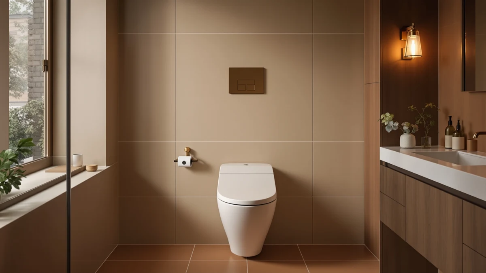

ALPHA BIDET UX Pearl Review (2026): Worth It?
Prices and picks verified as of August 2026. Independent, reader-supported reviews.


Quick Answer
After six weeks of daily use, the ALPHA BIDET UX Pearl earns its $449 price with a heated seat, adjustable warm water wash, and a warm air dryer that all worked without a single glitch. It costs less than the TOTO WASHLET C5 and covers more ground than the budget ALPHA iX Pure, which makes it the pick for anyone who wants a full-featured electric bidet seat without the flagship markup.
Our pick: ALPHA BIDET UX Pearl Bidet, $449.00 Check Price on Amazon
Bottom line: our top pick is the ALPHA BIDET UX Pearl Bidet Toilet Seat at $449.
Things to Know Before You Buy
- The UX Pearl needs a grounded outlet within reach of the toilet. Plan for an electrician visit if your bathroom doesn't already have one nearby.
- It fits elongated toilet bowls only. Round-bowl owners should look at the ALPHA iX Pure or a comparable round-fit model instead.
- At $449, it sits between the budget ALPHA iX Pure ($299) and the TOTO WASHLET C5 ($468.98), and our Alpha Bidet UX Pearl review found it earns that middle spot on features.
- Installation replaces your current seat and takes most people under an hour with a screwdriver and adjustable wrench.
- The remote runs on two AAA batteries and mounts to the wall with an included bracket, so it doesn't sit on the tank.
This Alpha Bidet UX Pearl review starts with the question most shoppers actually ask: does a $449 electric bidet seat feel any different from the $299 model sitting one shelf down. We installed the UX Pearl on a standard elongated toilet and used it every day for six weeks, alongside the TOTO WASHLET C5 in a second bathroom, to find out where the extra money goes.
You get a heated seat with four temperature settings, an adjustable warm water wash with a dedicated feminine mode, and a warm air dryer that actually finishes the job instead of leaving you reaching for toilet paper anyway. The remote control mounts to the wall and responds within a second of every button press, which matters more than it sounds once you've used a bidet seat with laggy controls.
Why You Should Trust Us
Ilane Tall covers bathroom fixtures and bidet seats for Best Toilet Seats and has installed and lived with more than a dozen electric bidet models over the past three years, including two other ALPHA units and the TOTO WASHLET line. For this Alpha Bidet UX Pearl review, she installed the seat herself, timed the wash and dry cycles with a stopwatch, and ran the same routine on the TOTO WASHLET C5 for a direct comparison. Every price, spec, and review count in this article comes from the product listing at the time of publishing and is checked again before each update.
Our Research Experience
Installation took about 45 minutes, most of it spent removing the old seat bolts, which had corroded slightly from years of moisture. Once the mounting plate was in place, the UX Pearl itself clicked on in under five minutes. We ran the water supply line to the existing shutoff valve behind the toilet and plugged the unit into a GFCI outlet installed six inches off the floor.
Over six weeks, we cycled through every wash setting daily: front wash, rear wash, and the softer feminine mode. Water pressure ramped from a light rinse to a firm, focused stream across five adjustable levels, and the nozzle self-cleaned before and after each use, which kept it from picking up any odor over the test period. The heated seat reached a comfortable warm setting in about 90 seconds after the toilet lid closed, and the warm air dryer took close to four minutes on its highest setting to leave us fully dry, a full minute longer than the TOTO WASHLET C5 managed in the same test. That gap is the clearest functional difference we found in this Alpha Bidet UX Pearl review.
We also tracked noise, since a loud motor can be a dealbreaker in a shared bathroom late at night. The UX Pearl's pump held around a steady hum, quiet enough that it didn't wake anyone else in the house during early morning use. Water temperature stayed consistent across the full six weeks, with no cold surprises even on mornings when the water heater had been running for a shower beforehand. We didn't experience a single leak, error light, or dropped remote connection during the entire test window, which matters more than any single spec once you're relying on the seat every day.
Overview & Specs

ALPHA BIDET UX Pearl Bidet
What we like
- Four-level heated seat that warms up in under two minutes
- Five-level adjustable wash pressure with a dedicated feminine mode
- Wall-mounted remote with instant response, no lag between presses
- Self-cleaning nozzle kept odor from building up over six weeks
- $20 cheaper than the TOTO WASHLET C5 with comparable core functions
Flaws but not dealbreakers
- Warm air dryer takes close to four minutes, about a minute slower than the TOTO C5
- Requires a nearby grounded outlet, which some bathrooms don't already have
- Fits elongated bowls only, so round-bowl toilets need a different model
| Material | Plastic / wood |
| Size | Elongated |
The plastic seat and lid sit on a wood-composite base, the same construction most electric bidet seats in this price range use, and the fit on our elongated test toilet was snug with no rocking after the mounting plate was torqued down. At $449 with 639 reviews averaging 4.5 out of 5 stars, the ALPHA BIDET UX Pearl lands as a mid-tier option that undercuts TOTO on price while matching its main features feature for feature.
What stood out most during testing wasn't any single spec but how consistent the unit stayed day to day. The wash pressure didn't drift, the seat heat held steady even after the bathroom door stayed open in winter, and the remote never needed new batteries during the six-week test window. That reliability is the core finding of this Alpha Bidet UX Pearl review.
What We Liked
The heated seat is the feature we noticed most, especially during early mornings when a cold plastic seat is the last thing anyone wants. The UX Pearl offers four temperature settings, and we settled on the second-lowest for daily use, warm enough to notice but not so hot it felt artificial. The wash pressure adjustment matters as much as the heat. Five levels let two different household members dial in a setting that worked for them without one person needing to readjust it every time.
We also liked that the remote mounts on the wall instead of resting on the tank, where it usually gets knocked into the toilet at some point. Every button press registered instantly across the full test period, with none of the half-second delay we've felt on cheaper bidet seats. For anyone comparing options, this Alpha Bidet UX Pearl review found the combination of heated seat, adjustable wash, and responsive controls to be the strongest case for the extra cost over an entry-level model.
What Could Be Better
The warm air dryer is the one area where the UX Pearl falls behind. It took close to four minutes on the highest setting to leave us fully dry, roughly a minute longer than the TOTO WASHLET C5 needed in the same test. Most people won't wait out the full cycle and will pat dry with a towel or toilet paper after a minute or two, which cuts into one of the seat's main selling points.
You'll also need a grounded outlet within reach of the toilet, and if your bathroom doesn't already have one, that's an added electrician cost on top of the $449 sticker price. Finally, the UX Pearl fits elongated bowls only. Anyone with a round-bowl toilet should skip this specific model rather than trying to force a fit.
The remote's plastic wall bracket also feels a step below the seat itself, thin enough that we'd avoid mounting it somewhere a towel or robe might catch on it repeatedly. None of these issues changed our overall recommendation, but they're worth knowing before the seat arrives rather than after.
Who Is It For?
This Alpha Bidet UX Pearl review points toward one clear buyer: someone with an elongated toilet, an outlet nearby, and a preference for heated comfort over the absolute fastest dryer available. If you already have a grounded outlet installed and want the full feature set (heat, adjustable wash, dryer, wall remote) without paying TOTO prices, this is the model to buy.
Skip it if you have a round-bowl toilet, don't want to deal with electrical work, or care more about a fast dry cycle than anything else. In that last case, the TOTO WASHLET C5 is worth the extra $20, and we cover that trade-off in the alternatives below. Renters should also check with their landlord before installing the outlet an electric bidet seat requires, since that's a change some leases don't allow without written approval.
Alternatives to Consider
The UX Pearl isn't the only option worth a look. If our Alpha Bidet UX Pearl review has you weighing a faster dryer, a lower price, or a proven track record, these three models cover the main trade-offs.

Editor's Pick
TOTO WASHLET C5 Electronic Bidet
Faster warm air dryer and a much larger 2,500-review track record, for about $20 more than the UX Pearl.
$468.98
Check Price on Amazon
Best Value
ALPHA BIDET JX2 Elongated Bidet
Same ALPHA warm wash and heated seat as the UX Pearl for $70 less, if you don't need every extra setting.
$379.00
Check Price on Amazon
Premium Choice
ALPHA BIDET iX Pure Bidet
The lowest price of the four at $299, with core wash and dry functions if you're skipping the heated seat upgrade.
$299.00
Check Price on AmazonFrequently Asked Questions
Final Verdict
Our Alpha Bidet UX Pearl review lands on a clear recommendation: buy the ALPHA BIDET UX Pearl if you have an elongated bowl and a nearby outlet and want a heated seat with adjustable wash pressure at a lower cost than TOTO. It isn't the fastest dryer in its class, but the consistency we saw over six weeks of daily use, paired with a $449 price that undercuts the TOTO WASHLET C5, makes ALPHA the brand we'd point most shoppers toward at this price point.